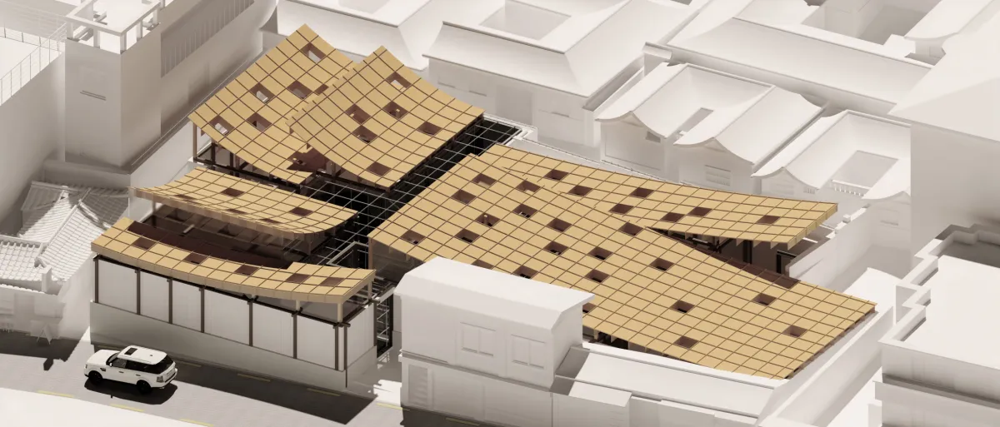
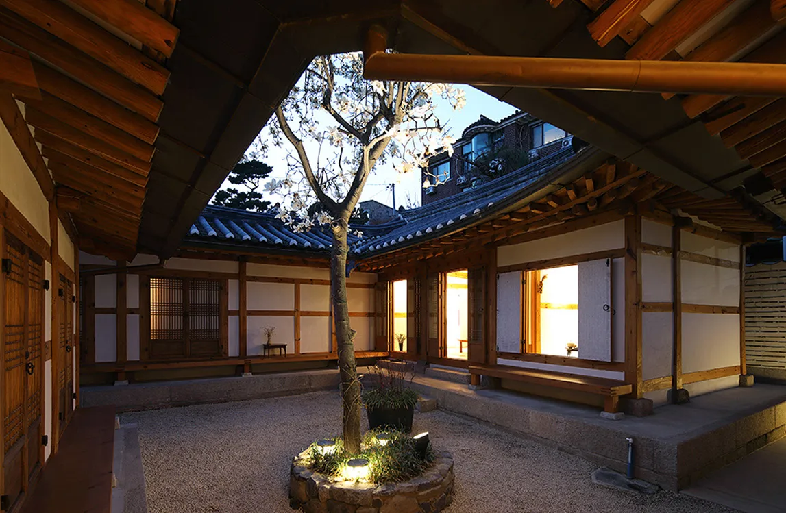
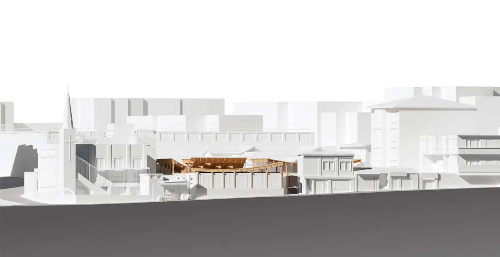
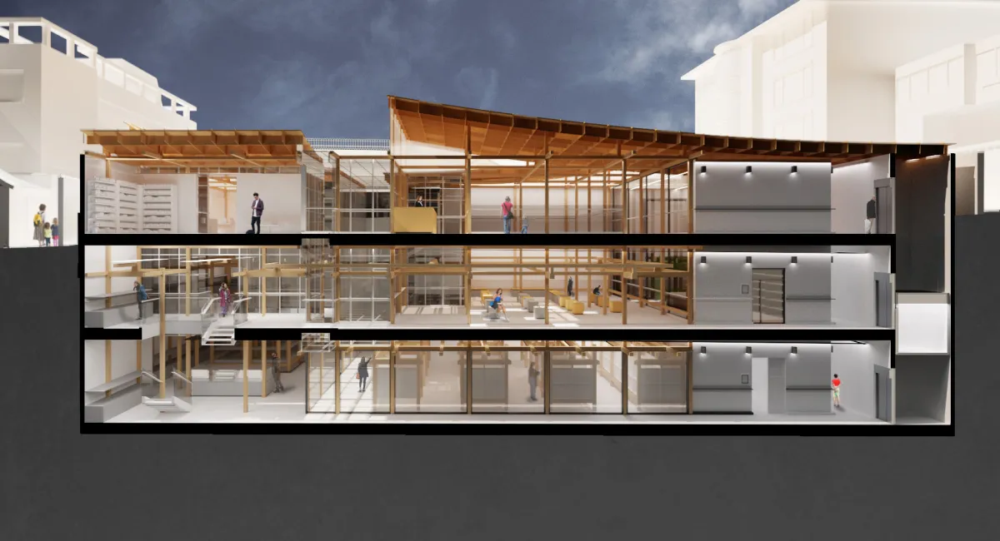
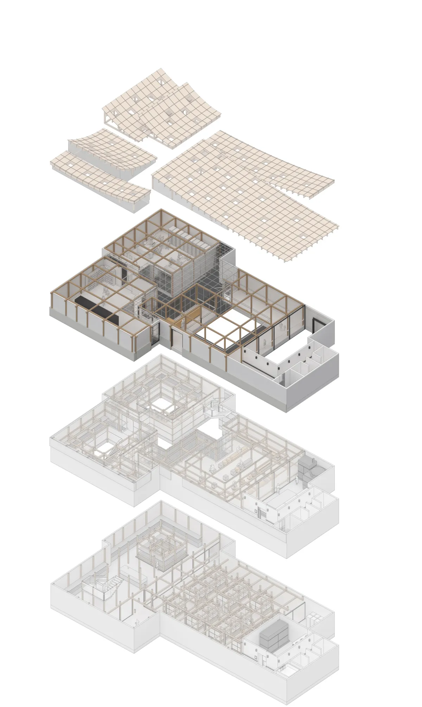
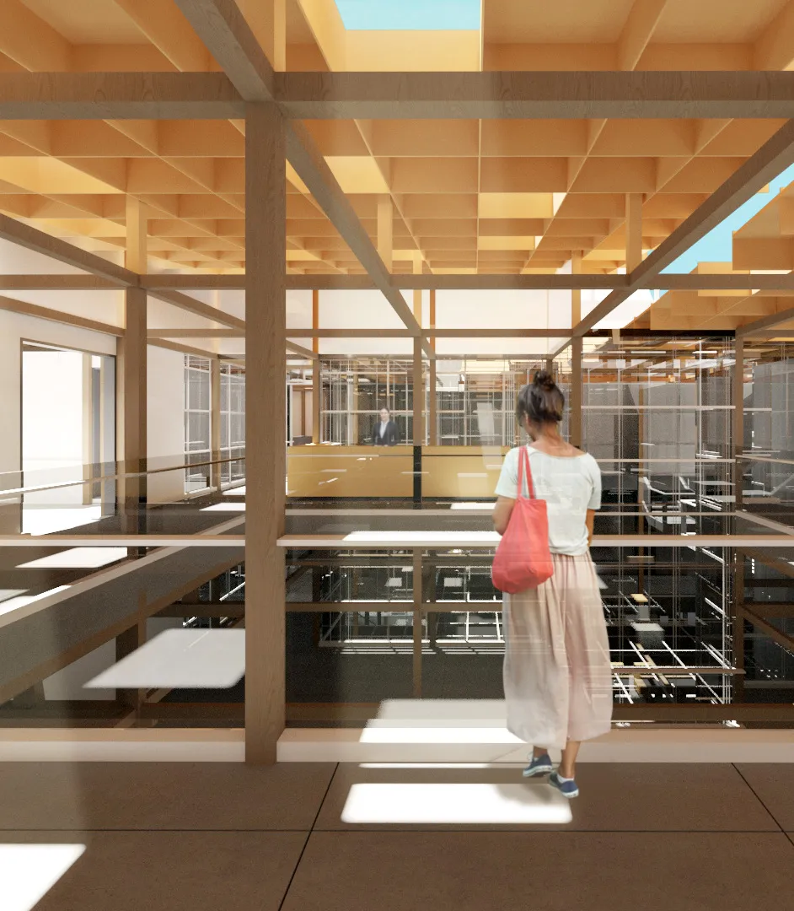
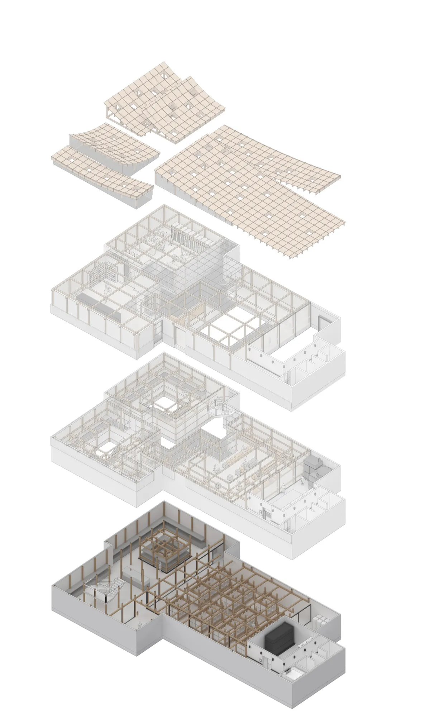
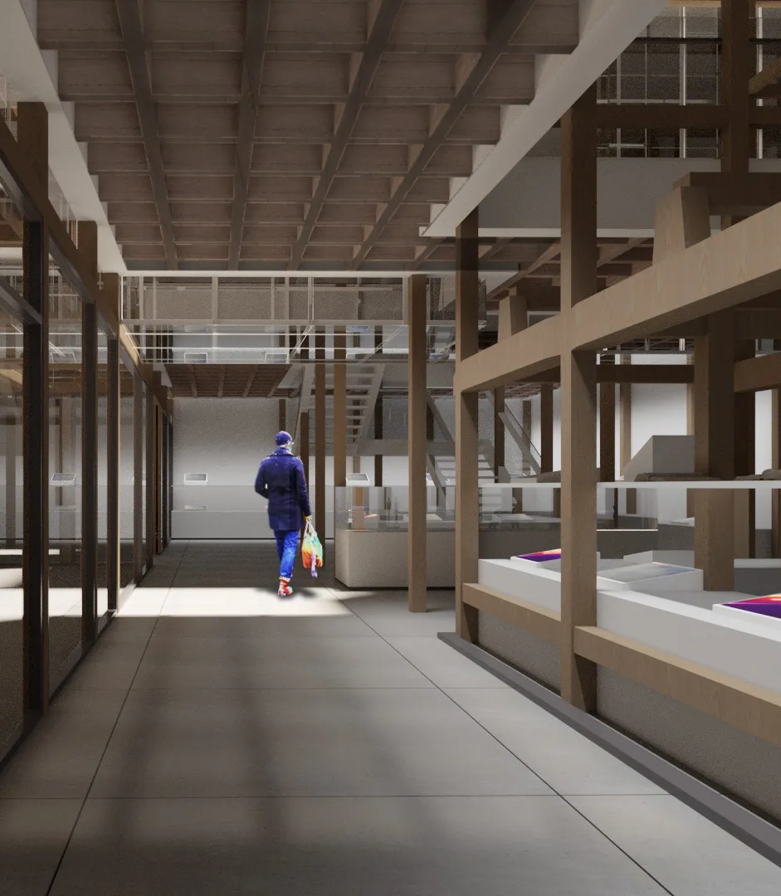

Archive of Everyday
한옥 대지의 일상 아카이브
Adaptive Reuse Archive on a Hanok Site
배렴가옥이 있던 계동길 한옥 대지를 일상의 기록을 모으는 아카이브로 바꾼다.

'전통이란 무엇인가'라는 질문에서 출발해 그 답을 기록과 소통에서 찾았다. 과거와 지금을 산 사람들의 평범한 하루를 모으고, 기존 아카이브와 달리 누구나 쉽게 들어와 열람하게 한다.
기와지붕의 반복 곡선, 한옥 목구조의 격자, 기존 가옥의 중정을 새 건물의 디자인 요소로 삼았다. 모자란 면적은 지하로 풀었다. 옛 중정 자리에 더 크게 낸 아트리움이 지하 3층 기록 보관소까지 빛을 내린다.
Site


Section

Atrium and Entrance


Main Storage

